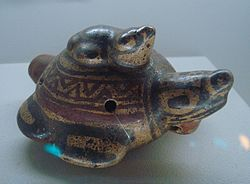
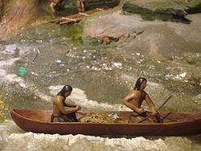

La región donde se localiza el parque nacional Manuel Antonio fue poblada por la comunidad indígena Quepoa, nombre que dio origen a la ciudad de Quepos. Con la llegada de los colonos, las tierras se convirtieron en área de cultivos que posteriormente fueron adquiridas por la United Fruit Company
En 1972, por presión del pueblo costarricense, fue adquirido por el Estado, quedando bajo su protección y creándose el parque nacional bajo la Ley 5100. Actualmente es administrado por el Área de Conservación Pacífico Central (ACOPAC), del Sistema Nacional de Áreas de Conservación (SINAC), del Ministerio del Ambiente, Energía y Telecomunicaciones (MINAET).
